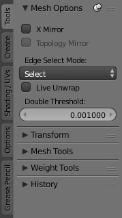

标签 & 面板¶
标签¶

工具标签 (已选中)、创建等。
标签是用户界面中的重叠区域。标签页可以是垂直(工具栏)或者水平的(属性编辑器、用户设置)。
可以在标签页标题栏使用 Wheel 切换垂直标签页，使用 Ctrl-Wheel 可以切换任意位置标签页。

水平标签页标题栏。
面板¶

工具栏面板
橙色: 面板标题栏
面板是用户界面的最小组织单位。折叠面板可隐藏内容。 属性编辑器 使用了面板， 工具栏 和 属性区块 也存在面板。
右侧的图片中有3个面板： 变换 、 编辑 和 历史 。 编辑 面板处于展开状态，其余两个面板已经折叠。
Collapsing and Expanding¶
标题左侧的三角形会显示面板的展开 (▼) 与收起 (►) 状态。
- 在面板标题栏
LMB单击可以展开或收起。 - 按下
A展开/收起鼠标指针下方的面板。 - 在面板标题栏
Ctrl-LMB单击，将收起其余面板，仅展开该面板。 LMB在标题栏上方拖动可以一次展开或收起多个面板。
位置¶
可以通过 LMB 单击并拖动抓手部件 (::::) ，改变面板在区块内的位置。
钉住¶
能同时看到不同标签页的面板自然是再好不过的事情了。这个需求可以通过钉住面板实现。
不管选中哪个标签页，被钉住的面板始终可见。 在面板标题栏按下 Shift 或者 RMB 单击并选择 钉 可以钉住该面板。(注：该操作仅适用于工具栏区块)
前面第一张图片显示的就是工具标签页的 Mesh Options 被钉住。
缩放¶
在区块上 Ctrl-MMB 单击并移动鼠标，或者在区块上按下 NumpadPlus 与 NumpadMinus 可以改变区块的缩放比例，实现区块内容缩放。 按下 Home (显示所有) 可以重置鼠标指针所在屏幕/面板的缩放比例。
对齐¶
可以修改 属性编辑器 上的面板对齐方式垂直或水平。在 属性编辑器 主区块 RMB 单击，并在弹出菜单选择 水平 或 垂直 。 不过记得面板是针对垂直对齐优化的。